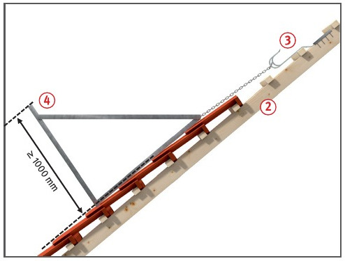
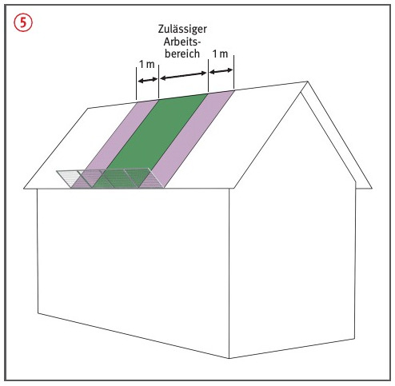

Fehlende Sicherungsmaßnahmen beim Auf- bzw. Abbau, nicht sachgerechte Befestigung sowie Ausführung von Dacharbeiten außerhalb des zulässigen Arbeitsbereiches können zu Absturzunfällen führen.
Allgemeines
Dachschutzwände nur bis zu
einer Dachneigung von 60° einsetzen.
Bei Dachneigungen von mehr
als 22,5° darf der Höhenunterschied zwischen Arbeitsplatz und Einrichtungen zum Auffangen abrutschender Beschäftigter
nicht mehr als 5,00 m betragen .
Schutzwandhalter nur an durchgehenden, senkrecht zur Traufe verlaufenden, ausreichend tragfähigen Sparren befestigen.
Beschäftigte sind gemäß der Betriebsanweisung und der Aufbau- und Verwendungsanleitung des Herstellers zu unterweisen.
Dachschutzwände sind entsprechend
der Aufbau- und
Verwendungsanleitung des Herstellers zu verwenden. In der Aufbau- und Verwendungsanleitung des Herstellers werden Mindestquerschnitt, Befestigungsmittel und ggf. erforderliche zusätzliche Maßnahmen beschrieben .
Dachschutzwände mit einer Bauhöhe von mindestens 1,00 m verwenden und nach Angabe des Herstellers anbringen .
Für die Dachschutzwand nur Netze oder Geflechte mit einer
Maschenweite von höchstens 10 cm verwenden.


Schutzmaßnahmen
Beschäftigte, die Schutzwände montieren, müssen gegen Absturz gesichert sein, z. B. durch PSA gegen Absturz.
PSA gegen Absturz nur an geeigneten Anschlageinrichtungen befestigen. Beschäftigte vor der ersten Benutzung und nach Bedarf, mindestens einmal jährlich unterweisen.
Für die PSA gegen Absturz und die Rettungsausrüstung ebenfalls Unterweisungen durchführen. Zusätzlich sind praktische Übungen anhand des jeweils eingesetzten Systems und den jeweiligen Umgebungs- und Arbeitsbedingungen erforderlich. Rettungskonzept erstellten.
Anschlagmöglichkeiten an Teilen baulicher Anlagen können zur Befestigung genutzt werden, wenn deren Tragkraft für eine Person von 9 kN einschließlich den für die Rettung anzusetzenden Lasten nachgewiesen ist.
Vorhandene Anschlageinrichtungen müssen vor der Benutzung auf ihre Tragfähigkeit überprüft werden.
Der Unternehmer oder der fachlich geeignete Vorgesetzte hat die Anschlageinrichtungen festzulegen
und dafür zu sorgen, dass die PSAgA benutzt werden.
Befestigung von Dachschutzwänden an Sicherheitsdachhaken nur nach AuV des Herstellers .
Dachschutzwände müssen die zu sichernden Arbeitsplätze seitlich um mindestens 1,00 m überragen .
Prüfungen
Dachschutzwände nach Sturz
einer Person oder Fall von
Gegenständen nur weiterverwenden,
wenn sie durch eine
"zur Prüfung befähigte Person"
überprüft wurden.